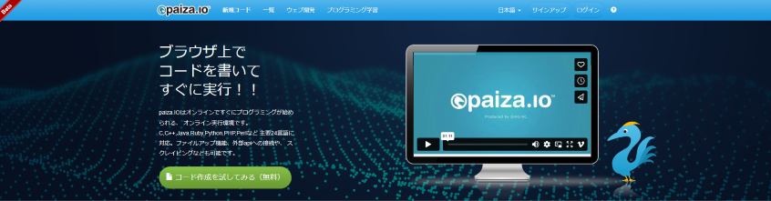

２章のはじめに
２章は「値を扱う」ことを学んでいきます。
この章がプログラムの神髄となります。なぜなら、
プログラミングとは、１から１０まで
値を操作する作業
だからです。
- 値を作る準備をする
- 値を作る
- 値を書き換える
- 値を入れ換える
- 値を入れ替える
- 値を使う
- 値を入力する
- 値を出力する
２章はそんないろいろな値たちのお世話をする為のお勉強になります。
他にもあるかもしれない。
兎にも角にも「値」が中心となっています。
この文章も全て値が出力されたものです。
２章は「値を扱う」ことを学んでいきます。
この章がプログラムの神髄となります。なぜなら、
プログラミングとは、１から１０まで
値を操作する作業
だからです。
他にもあるかもしれない。
兎にも角にも「値」が中心となっています。
この文章も全て値が出力されたものです。
２章はそんないろいろな値たちのお世話をする為のお勉強になります。
↑ここをクリックして、paiza.ioサイト内の『コード作成を試してみる(無料)』ボタンを押してください。(外部サイトにジャンプします)
※ リンクをクリックする前に、必ずリンク先が https://paiza.io/ja とブラウザに表示されるかを確認してからクリックしてください。この確認作業はセキュリティの基本です。
もうプログラムが組める環境が出てきます。簡単！
左上の緑のボタンみたいなところにマウスカーソルを重ねると使いたい言語が一覧表示されます。
「Python3」を選んでクリックすれば、もうプログラム組み放題です。😽
ぜひ使ってみてください！
自分で導入しなくても、学びの途中で『動かしてみる』ボタンを押すだけでその場で埋め込みエディタが開くようになっていますので、その中で自由に打ち込んで動かして試しまくっても問題ありません。
こちらは有料ですが、数あるプログラミング学習サイトの１つです。
学習は有料ですが「スキルチェック」は無料で受けられます。
２章からは、このスキルチェックの問題を解く為に有用な学習をしていきます。
会員規約上、スキルチェックの内容に関することは一切触れられません。全て他言無用なのです。🤐
なので、完全自力で頑張って解いてください。💪
ちなみにズルは一切許されません。スキルが無ければ肩書だけの役立たずです。
でもまずは２章を読みながら paiza.io でプログラムを実際に打ち込んでみてください。
書いて実行することに慣れましょう！😸